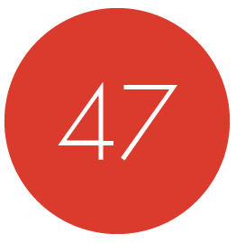

ScalaDays
June 16th - 18th, Berlin
KEYNOTES

Erik Meijer
Contravariance is the Dual of Covariance | Observable is the Dual of Iterable
Tuesday June 17th

Chad Fowler
Keynote
Wednesday June 18th


About Scala Days Berlin
Scala Days, the premier Scala Conference, makes its fifth annual debut on June 16th, 2014 at the Kosmos in Berlin.
The conference will bring together developers from all corners of the world to share their experiences and new ideas around creating applications with Scala and related technologies, like Akka and Play Framework. Scala Days provides a unique opportunity for Scala users to interact with the key contributors to the language and related technologies and connect with fellow developers.
Last year’s conference in New York city was a sold-out event at 500 attendees, and the buzz around Scala Days 2014 promises an even bigger show! Leaders from Scala User Groups and communities around the globe, students and language contributors, will gather to discuss academic research, use-cases and visionary projects for a two day, action-packed event.
Schedule
Training
Want to get the most out of Scala Days Berlin? Register for a 2-day in-person training course on Saturday and Sunday before the conference kicks off. The courses are designed for developers of all levels of proficiency with the Typesafe Reactive Platform.
Receive 200 Euros off training with the purchase of one or more Scala Days pass!
Courses include:
Fast Track to Scala
This two-day course is designed to give experienced developers proficient in Java, C++, C# or Ruby the know-how to confidently start programming in Scala. The course ensures you will have a solid understanding of the fundamentals of the language, the tooling and the development process as well as a good appreciation of the more advanced features. If you already have Scala programming experience, then this course could be a useful refresher, yet no previous knowledge of Scala is assumed.
Prerequisites: Students should bring their own laptop with Java 6 or higher installed.
After having participated in this course you should
- be a competent user of Scala for application development
- know and be able to apply the functional programming style in Scala
- know how to use the fundamental Scala tools
- be confident to start using Scala in production applications
Program
- Introduction
- First steps in Scala
- OO basics
- Testing
- Collections and functional programming
- For-expressions and loops
- Inheritance and traits
- Pattern Matching
- Dealing with optional values
Advanced Scala
If you already have programming experience with Scala and want to understand its advanced features, this two-day course is for you. It is designed to help developers fully understand topics such as advanced object-functional programming, the power of Scala's type system, implicits, etc. The course also covers how to leverage these features to create well-designed libraries or DSL’s utilizing proven best practices.
Prerequisites: A basic knowledge of Scala as covered in the "Fast Track to Scala" course with at least two months practical experience in developing with Scala. Students should bring their own laptop with Java 6 or higher installed.
After having participated in this course you should
- understand all aspects of the object-functional approach
- know and be able to apply advanced features of Scala's type system
- fully understand implicits and type classes
- be confident to create libraries and DSLs with Scala
Program
- Short recap of important basics
- Object-functional programming in depth
- Mastering the type system
- Explicitly implicit
- Internal DSLs
- Custom Scala collections
Fast Track to Akka with Scala
This two-day course introduces experienced application developers to the reactive Akka toolkit and runtime and the methodologies that enable the creation of real-world actor-based systems in Scala on a single JVM. This course has extensive hands-on work and successive exercises build upon prior lessons learned to produce a fully functional application that is both event-driven and resilient by the conclusion of the course.
Prerequisites: Code examples and exercises will be written in Scala, so a basic knowledge of Scala as covered in the "Fast Track to Scala" course is required. Students should bring their own laptop with Java 6 or higher installed.
After having participated in this course you should
- know how to design scalable and fault-tolerant applications using Akka's actors
- know how to configure, test and tune Akka applications
- know best practices for designing asynchronous, event-driven systems using Akka
- be confident to start using Akka in production systems
Program
- Intro
- Actor basics
- Testing actors
- Actor lifecycle
- Fault tolerance
- Scaling up with routers
Advanced Akka with Scala
This is a two-day advanced course on building distributed reactive applications using Akka and Scala. It is intended for developers who already have a strong understanding of the fundamentals of building applications using Akka and Scala on a single JVM and are looking to learn how to scale out to multiple nodes and 3rd party systems. This course has extensive hands-on work and successive exercises build upon prior lessons learned to produce a fully functional application that is both event-driven and resilient by the conclusion of the course.
Prerequisites: A basic knowledge of Akka as covered in the "Scaling up with Akka and Scala" course as well as a basic knowledge of Scala as covered in the "Fast Track to Scala" course with at least two months practical experience in developing with Akka and Scala. Students should bring their own laptop with Java 6 or higher installed.
After having participated in this course you should
- know how to use Akka's remoting and clustering features
- understand how to integrate 3rd party systems
- know how to create a RESTful HTTP layer
- be confident to start using Akka on large scale
Program
- Akka basics reloaded
- Remoting
- Clustering
- Integrating 3rd party systems
- Exposing a RESTful HTTP interface
Fast Track to Play with Scala
This two-day course introduces experienced web-developers to the design-patterns and methodology essential to building reactive, scalable web applications with Play Framework and Scala. An introduction to Slick, a type-safe and modern database query and access library for Scala is also part of agenda. In this course, successive exercises build upon prior lessons learned to produce a fully functional application by the conclusion of the course.
Prerequisites: Code examples and exercises will be written in Scala, so a basic knowledge of Scala as covered in the "Fast Track to Scala" course is required, as is experience with HTML and JavaScript. Students should bring their own laptop with Java 6 or higher installed.
After having participated in this course you should
- know how to build fully fledged web applications using Play
- know best practices for developing web applications using Play
- be confident to start using Scala and Play applications in production
Program
- Introduction
- Forms
- Testing
- Managing Assets
- HTTP Programming
- Asynchronous programming in Play
- Interacting with Web Services
- Working with JSON
- Ajax
- Slick
*Training will begin at 9 am on Saturday and Sunday mornings and will run into late afternoon on both days.
Tickets
| Conference (2 days) |
Conference Academic rate (2 days) | Conference + 2 Training days (4 days) | 2 Training days only | |
|---|---|---|---|---|
| Before March 27 2014 | € 650.- | € 400.- | € 1,549.- | € 1,099.- |
| Before May 7 2014 | € 700.- | € 400.- | € 1,599.- | € 1,099.- |
| After May 7 2014 | € 800.- | € 400.- | € 1,699.- | € 1,099.- |
Sponsors
Hosted By
Gold


Silver


Code of Conduct
Our Code of Conduct is inspired by the kind folks at NE Scala, who adopted theirs from PNW Scala. We think they both nailed it.
Nobody likes a jerk, so please show respect for those around you. This applies to both in-person and online behavior.
Scala Days is dedicated to providing a harassment-free experience for everyone, regardless of gender, gender identity and expression, sexual orientation, disability, physical appearance, body size, race, or religion (or lack thereof). We do not tolerate harassment of participants in any form.
All communication should be appropriate for a technical audience, including people of many different backgrounds. Sexual language, innuendo, and imagery is not appropriate for any conference venue, including talks.
Participants violating these rules may be asked to leave without a refund at the sole discretion of the organizers.
Contact us
©2014 Scala Days